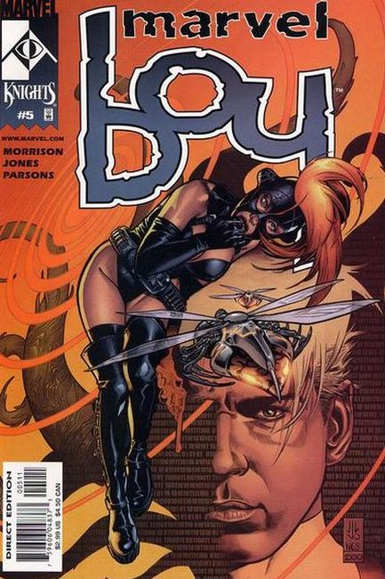

1950: Cover art by Russ Heath. Origin of Marvel Boy in "Marvel Boy and the Lost World," art by Russ Heath; Marvel Boy, Bob Grayson, is sent to earth from Uranus by his father to combat evil; When he arrives, he discovers newly risen continent about to be seized by an international criminal. "Panic!"; The United Allies trick the Red Asiatic League into surrendering by inducing panic. "The Case of the Cat" text story. "Eyes of Death!", art by Russ Heath; An accident gives a scientist x-ray vision.
2000: Grant Morrison script; J.G. Jones art. Forget everything you know about the name Marvel Boy! Burn the toga and the headband! Shred the cape and wave goodbye to Uranus! This is a very different character. The new Marvel Boy is Noh-Varr, the youngest member of a Kree Diplomatic team.
After voyaging for years, these alien super heroes reach Earth, only to be blown out of the sky. Only Noh-Varr survives, and is captured and tortured by the mysterious Midas Organization. Escaping, he vows vengeance on all mankind. But with Morrison weaving this tale, don't expect cliche superheroics or a squeaky clean protagonist.
Instead, get ready for Dr. Midas, a criminal billionare who's so obsessed with Cosmic Rays that he bathes in them... Exterminatrix, who arrives in issue #3 to make life heaven and hell for Marvel Boy... the Plex Intelligence, a clone of the Supreme Intelligence, but with Multiple Personality options... Hexus, the Living Corporation... Bannermen, a trio of U.N. super soldiers whose bodies are laced with adamantium and enhanced by gamma-rays... and have we talked about our ticked off protagonist yet?
Hey, why don't we just listen to the words of Morrison instead? "We're always being told that super hero books are nothing but adolescent power fantasies. Fine. Here comes the ultimate adolescent power fantasy! The Marvel Style began with the Sub-Mariner... and like Bill Everett's Prince Namor, I wanted my hero to be an outcast, a fiery rebel with an appetite for righteous mass destruction.

Marvel Boy is not one of the Kree we're familiar with from books like AVENGERS and CAPTAIN MARVEL. He's a super diplomat who's spent a few years adventuring across numerous alternate realities and bizarre dimensions. Now, in the Marvel Universe, he must use all of his skills and powers just to stay alive and continue his one-man guerrila war against our planet.
Like Marvel Boy himself, I'm a newcomer to this Universe and I'm having fun using stuff like S.H.I.E.L.D. or the Mindless Ones and finding new takes on it, things we haven't seen or thought before. I got sick of seeing what I call 'DadComics.' It's time to say goodbye to all those boring, nostalgic books. We're here to trash the past and make something new that's relevant to our lives today."